Prérequis
- Thunderbird 115 ou version supérieure
- Extension Go2Econtact installée dans Thunderbird
- Extension Envoyer Plus Tard (version 9.0+) installée dans Thunderbird
Go2Econtact s'appuie sur l'extension Envoyer Plus Tard pour expédier les accusés de réception au moment voulu. Si elle n'est pas encore installée :
- Dans Thunderbird, ouvrez le menu Modules complémentaires et thèmes
-
Recherchez Envoyer Plus Tard
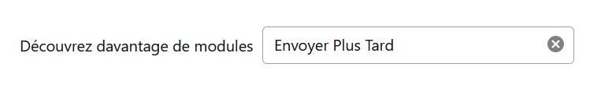
Saisir "Envoyer Plus Tard" dans le champ de recherche -
Cliquez sur + Ajouter à Thunderbird
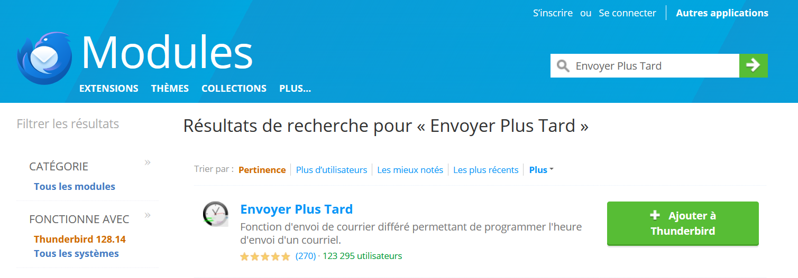
Résultat de recherche — cliquez sur "+ Ajouter à Thunderbird" - Redémarrez Thunderbird si demandé
Pour que Go2Econtact et Envoyer Plus Tard puissent communiquer, Go2Econtact a besoin d'un code d'identification propre à votre installation d'Envoyer Plus Tard. Ce code est généré automatiquement lors de l'installation — il est donc unique à votre poste de travail.
- Dans Thunderbird, ouvrez le menu Modules complémentaires et thèmes
-
Repérez l'extension Envoyer Plus Tard et cliquez sur son icône
pour accéder à ses options
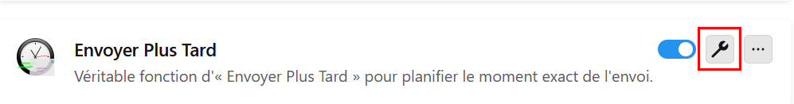
Accès aux préférences d'Envoyer Plus Tard — cliquez sur l'icône des paramètres -
Vérifiez que l'onglet Options est bien sélectionné, puis faites défiler
la liste jusqu'à la section Avancé
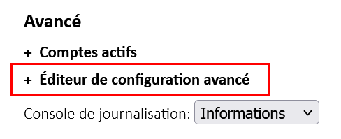
Section Avancé — cliquez sur Éditeur de configuration avancé pour le déplier -
Cliquez sur Éditeur de configuration avancé pour déplier la liste
des paramètres, puis faites défiler jusqu'à la ligne instanceUUID
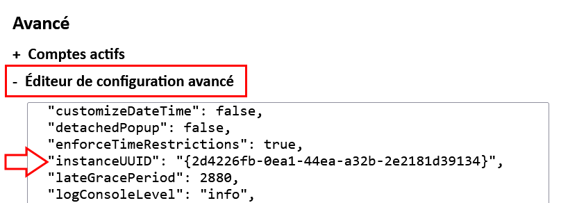
Éditeur de configuration avancé déplié — l'identifiant est visible -
Sélectionnez l'identifiant complet accolades comprises à la souris,
puis copiez-le (Ctrl+C)
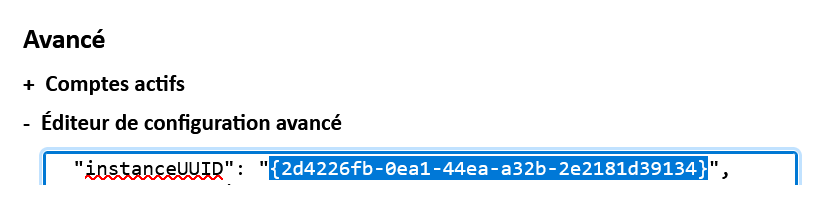
Sélection de l'identifiant, accolades comprises
Exemple de code :
{2d4226fb-0ea1-44ea-a32b-2e2181d39134}Ouvrez la configuration de Go2Econtact : clic droit sur l'icône de l'extension dans Thunderbird → Options.
3.1 Saisir le code d'identification Envoyer Plus Tard
- Allez dans l'onglet Envoyer Plus Tard de Go2Econtact, collez le code dans le champ prévu
- Un indicateur passe au vert ✓ si le code est reconnu comme valide — il est enregistré automatiquement
- S'il reste rouge ✗, vérifiez que vous avez bien copié l'intégralité du code, accolades incluses
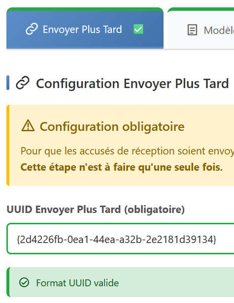
3.2 Configurer votre modèle de message
- Allez dans l'onglet Modèles
-
Sélectionnez l'adresse à configurer dans la liste déroulante —
un indicateur visuel précise si un modèle est déjà configuré pour ce compte
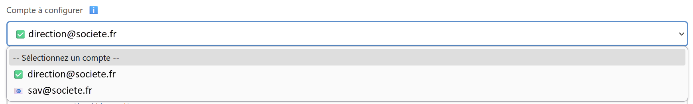
Liste des comptes — ✅ modèle configuré, 📧 aucun modèle - Rédigez votre message d'accusé de réception dans la zone de texte, ou cliquez sur Charger défaut pour démarrer avec un modèle prêt à l'emploi
- Cliquez sur Aperçu pour visualiser le rendu
-
Cliquez sur Sauvegarder
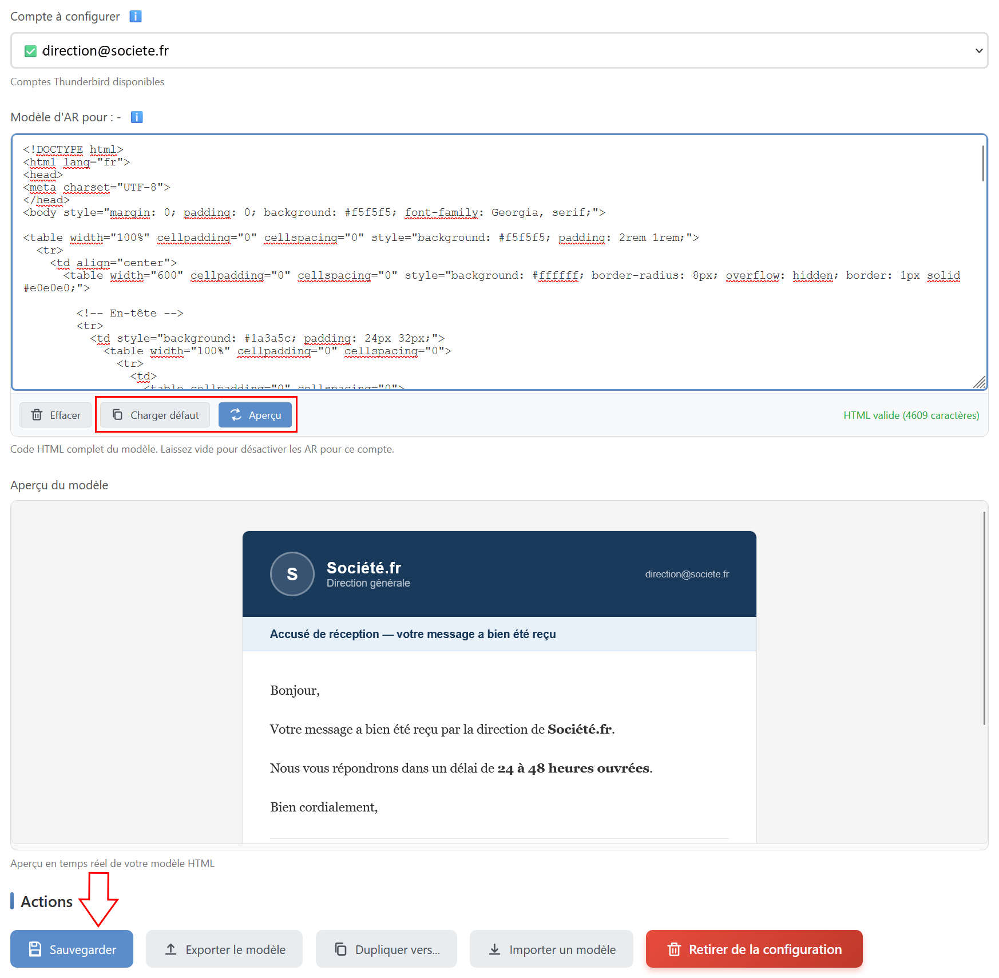
Éditeur HTML avec aperçu en temps réel — boutons Aperçu et Sauvegarder mis en évidence
3.3 Paramétrer l'onglet Configuration
L'onglet Configuration regroupe les règles de filtrage, le délai d'envoi (1 heure par défaut), le mode test et les autres réglages. Consultez la documentation pour le détail de chaque paramètre.
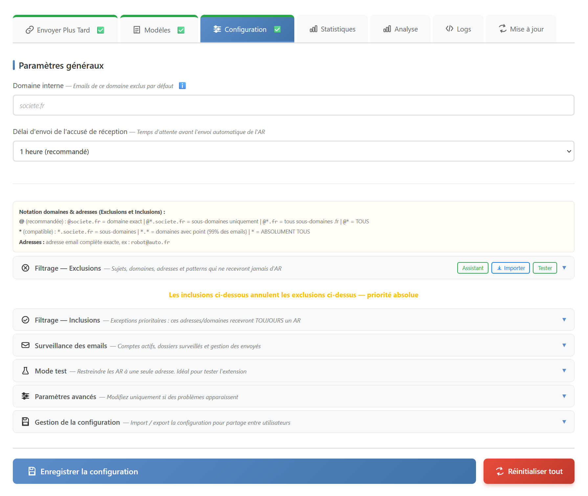
Pour préparer vos règles de filtrage, vous pouvez utiliser l'Assistant ou le Simulateur disponibles sur ce site.
3.4 Enregistrer et tester
- Cliquez sur Enregistrer la configuration en bas de l'onglet Configuration
-
Vérifiez que les onglets Envoyer Plus Tard, Modèles et Configuration ont une bordure verte
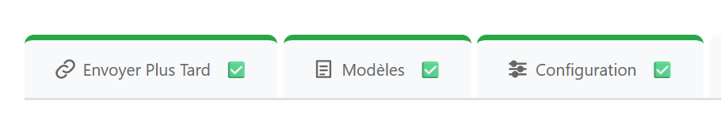
Les trois onglets à bordure verte — configuration valide -
Activez le mode test dans l'onglet Configuration et saisissez votre adresse personnelle
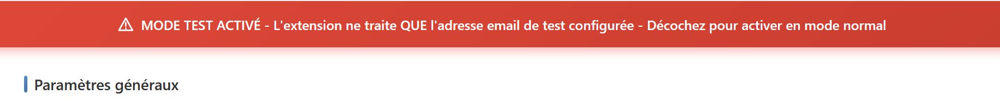
Bannière rouge — mode test activé, seule l'adresse configurée reçoit les AR 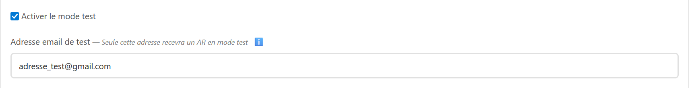
Saisir l'adresse email qui recevra les AR en mode test - Envoyez-vous un courriel de test et vérifiez que vous recevez bien l'accusé de réception
Et ensuite ?
- Documentation — détail de chaque onglet de configuration
- FAQ — réponses aux questions courantes
- Le popup — planification et contrôle rapide